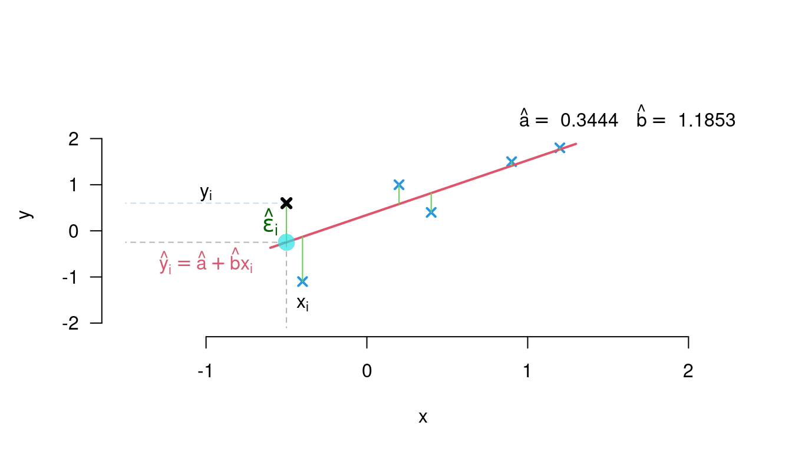
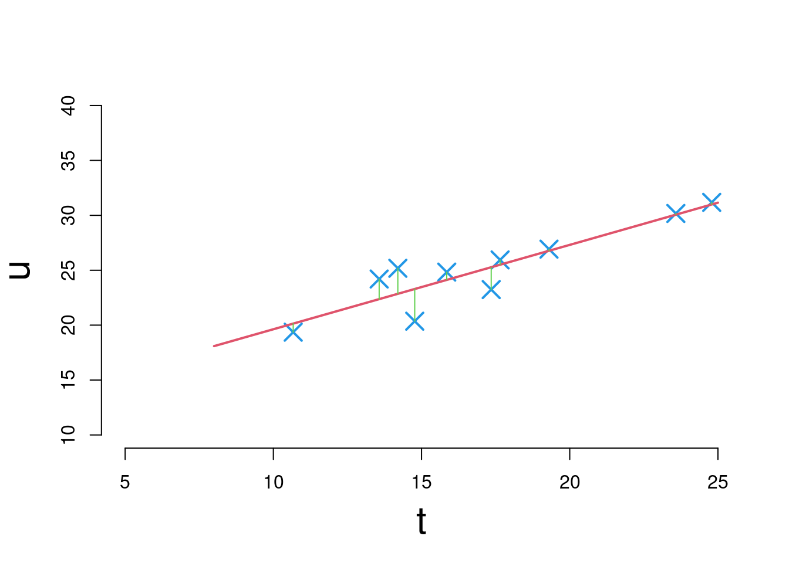

Chapter 5 Regression
We have empirically established a linear relationship between the sales \(S\) and the average temperature \(T\).
Can we now predict the expected sales for a given temperature level?
\(\leadsto\) correlation calculation vs. regression calculation:
When asking about the linear relationship between two characteristics we distinguish between the following two aspects:
Correlation: Determines the strength of the linear relationship between two characteristics \(X\) and \(Y\). In short: whether a linear relationship exists.
Regression: Determines the form \(Y=a + b X\) of the linear relationship between \(X\) and \(Y\). In short: which linear relationship exists.
In this chapter we will learn
- How to calculate the coefficients of linear regression.
- How to make the prediction and assess the quality of the model and
- How to extend the regression calculation to non-linear relationships.
5.1 Linear regression
Let \((x_1, y_1), \ldots, (x_n,y_n)\) be a sample of metrically scaled characteristics \(X\) and \(Y\).
We assume a linear functional relationship between \(Y\) and \(X\):
\[ y=a+bx,\quad a,b\in \mathbb R, \]
the term \(a+bx\) is called regression line;
the variable \(y\) is called regressand or explained variable;
the variable \(x\) is called regressor or explanatory variable.
In practice, the relationship is usually not perfectly linear. Therefore one writes \[\begin{align*} y_1&= a + b x_1 + \varepsilon_1\\ &\vdots\\ y_n &= a + b x_n + \varepsilon_n, \end{align*}\] where \(\varepsilon_1, \ldots, \varepsilon_n\) are the so-called error terms or residuals.
Example 5.1 (Linear regression for stock returns on market returns.) We consider the data from 4.3:
\[ \begin{array}{r|rr} month~i& market ~return ~x_i& stock~return~y_i\\\hline 1&0.4&0.4\\ 2&0.9&1.5\\ 3&1.2&1.8\\ 4&0.2&1.0\\ 5&-0.4&-1.1\\ 6&-0.5&0.6 \end{array} \]

5.1.1 Calculation of the regression coefficients
The regression coefficients, the intercept \(a\) and the slope of the regression line \(b\), are to be determined.
The method of least squares (MkQ) determines \(a\) and \(b\) by minimizing the sum of the squared error terms:
\[ \min_{a,b} \sum_{i=1}^n \varepsilon_i^2 = \min_{a,b} \sum_{i=1}^n (y_i-(a+bx_i))^2. \]
- Let \((x_1,y_1), \ldots, (x_n,y_n)\) be a sample of the characteristics \(X\) and \(Y\). The system of linear equations
\[ y_i = a + b x_i + \varepsilon_i, \quad i=1,\ldots, n \]
is called linear regression with intercept \(a\), slope \(b\) and error terms (residuals) \(\varepsilon_1,\ldots, \varepsilon_n\).
- The least squares estimators for \(a\) and \(b\) are given by \[\begin{align*} \hat a &= \overline y-\hat b \overline x, \\ \hat b &= \frac{\hat\sigma_{XY}} {\hat \sigma_X^2} = \hat\rho_{XY}\cdot \frac{\hat\sigma_Y}{\hat\sigma_X} = \frac{\sum_{i=1}^n x_i y_i - n\overline x\overline y} {\sum_{i=1}^n x_i^2 - n \overline x^2} = \frac{\sum_{i=1}^n (x_i-\overline x) (y_i-\overline y)} {\sum_{i=1}^n (x_i-\overline x)^2}. \end{align*}\]
5.1.2 Coefficient of determination
The coefficient of determination \(R^2\) describes the proportion of the total variance of the sample \((y_1,\ldots,y_n)\) that is explained by the regression line.
In the case of linear regression, the coefficient of determination \(R^2\) is defined as \[ R^2 = 1-\frac{\sum_{i=1}^n (a+b x_i-y_i)^2} {\sum_{i=1}^n (y_i-\overline y)^2}. \]
It holds
\[ 0\leq R^2\leq 1\quad\text{ und } \quad R^2 = \hat\rho_{XY}^2. \]
- \(R^2=0\) corresponds to the case of uncorrelatedness, and \(R^2=1\) corresponds to the case of perfect linear correlation between the features \(X\) and \(Y\).
Example 5.2 (Sales vs Weather) Cont. of Example 4.9.
We perform the linear regression from sales to temperature.
Characteristics:
\(U=\text{sales per customer}\)
\(T=\text{average temperature}\)
| Day | Sales | Temperature |
|---|---|---|
| 1 | 24.2 | 13.57 |
| 2 | 20.36 | 14.77 |
| 3 | 25.18 | 14.2 |
| 4 | 25.94 | 17.65 |
| 5 | 31.18 | 24.79 |
| 6 | 24.83 | 15.85 |
| 7 | 30.17 | 23.58 |
| 8 | 26.92 | 19.3 |
| 9 | 19.36 | 10.67 |
| 10 | 23.24 | 17.35 |
Estimate the coefficients of the regression line \(u=a+bt\) from the data, where \(\bar u= 25.138\); \(\bar t=17.173\); \(s_U^2=14.0488\), \(s_T^2 = 19.4984\) and \(\hat\sigma_{TU}=14.9797.\)
Then \(\hat b=\displaystyle\frac{14.9797}{19.4984} = 0.7683\)
and \(\hat a=25.138+ 0.7683\cdot 17.173 = 11.9448.\)
Sales as a function of temperature: \(u= 11.9448 + 0.7683\cdot t,~\text{ für } 10\leq t\leq 25.\)
Coefficient of determination: \(R^2=\hat\rho_{UT}^2=(0.905)^2=0.819.\)
Graphically:

5.2 Non-linear regression
If the relationship is not linear, such as \(v=\alpha\cdot \beta^u\): convert \(\rightarrow\) into a linear relationship using a suitable transformation, e.g. by logarithmizing: \(\ln v = \ln \alpha + (\ln \beta)\cdot u\).
Set: \(y=\ln v\), \(a=\ln \alpha\), \(b=\ln \beta\) and \(x=u\) \(\Rightarrow\) The transformed function \(y=a+bx\) is a straight line with the coefficients coefficients \(a\), \(b\).
The further procedure:
Transform the data \((u_i, v_i)\) of the sample accordingly
Calculate the regression coefficients \(a\) and \(b\) with the MkQ
Transform backwards \(\alpha\) and \(\beta\) from \(a\) and \(b\); here \(\hat\alpha=\text e^a\) and \(\hat\beta=\text e^b\)
Obtain the estimated functional equation; here \(v=\hat\alpha\cdot \hat\beta^u\)
Example 5.3 (Nonlinear (log-linearised) Demand function)
- Econometric relation: exponential demand \(q\) for a certain consumer good specific consumer good as a function of the price \(p\)
\[ q = \alpha\text e^{\beta \cdot p}, \beta<0 \]
- Transformation:
\[ q=\alpha \, \text e^{\beta\cdot p} \quad\Rightarrow\quad \ln q = \ln\alpha + \beta\cdot p \quad\iff\quad y=a+b\, x, \]
so: \(y=\ln q\), \(x=p\), \(a=\ln \alpha\), \(b=\beta\)
- the original data (\(q,p\)) and the transformed data (\(x,y\)):
\[ \begin{array}[t]{rrrrr} \hline i & q_i & p_i & x_i & y_i\\\hline 1 & 2.5224 & 5.75 & 5.75 & 0.9252\\ 2 & 1.6603 & 15.77 & 15.77 & 0.507\\ 3 & 2.1616 & 8.18 & 8.18 & 0.7708\\ 4 & 0.0578 & 17.66 & 17.66 & -2.8508\\ 5 & 0.0818 & 18.81 & 18.81 & -2.5035\\ 6 & 3.7369 & 0.91 & 0.91 & 1.3183\\ 7 & 2.8806 & 10.56 & 10.56 & 1.058\\ 8 & 0.2824 & 17.85 & 17.85 & -1.2644\\\hline \end{array} \]
Least-Squares estimates for \(a\) and \(b\) (\(\hat\sigma_{XY} = -9.0957\), \(\hat\sigma_X^2 = 43.6473\), \(\bar x= 11.9362\) and \(\bar y =-0.2549\): \[\begin{align*} \hat b&= \frac{-9.0957} {43.6473} =-0.2084\\ \hat a&= -0.2549 -0.2084 \cdot 11.9362 = 2.2325 \end{align*}\]
Transformation back into the parameters \(\alpha\) and \(\beta\):
\[ \hat \alpha = \text e^{\hat a} = 9.323 \text{ und } \quad \hat \beta=\hat b = -0.2084 \]
- Demand function:
\[ \hat q=9.323\cdot \text e^{-0.2084\cdot p} \]
Transformation table
For the transformation \(v=f(u,\alpha\beta)\rightarrow y=a+b\,x\) there are further examples of non-linear problems that can be can be transformed to a linear regression approach, are:
\[ \begin{array}[t]{c|ccccc} \hline No&v=f(u) & y=T(v) & a & b & x=g(u)\\\hline 1&v=\alpha + \beta\, u^k & v=\alpha + \beta\cdot u^k & \alpha & \beta & u^k\\[5pt] 2&v=\frac{\alpha\, u}{\beta+u} & \frac{1}{v} = \frac{1}{\alpha} + \frac{\beta}{\alpha}\, \frac{1}{u} & \frac{1}{\alpha} & \frac{\beta}{\alpha} & \frac{1}{u}\\[5pt] 3&v = \frac{u}{\alpha + \beta\, u} & \frac{u}{v} = \alpha + \beta\, u & \alpha & \beta & u\\[5pt] 4&v = \alpha \, \beta^u & \ln v = \ln \alpha + (\ln\beta) u & \ln \alpha & \ln \beta & u\\[5pt] 5&v = \alpha\, u^\beta & \ln v = \ln \alpha + \beta\, \ln u & \ln \alpha & \beta & \ln u\\[5pt]\hline \end{array} \]